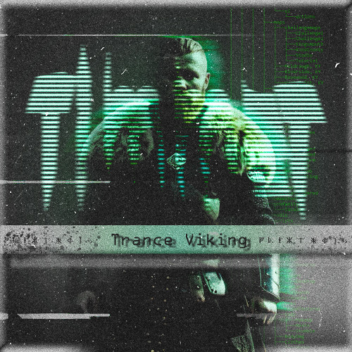
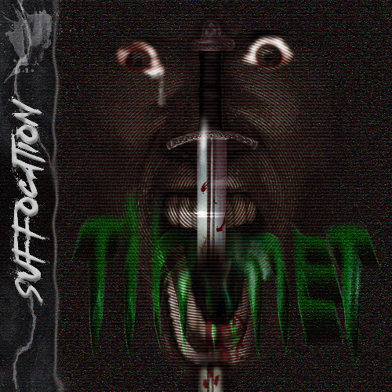
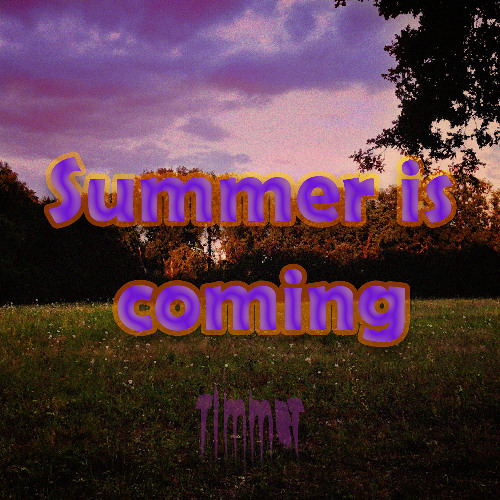

Steckbrief
- 28.07.2005
- Görlitz
- Hobbies
- Musikproduktion
- Photoshop
- Werdegang
- 2022: Realschulabschluss - Comenius Oberschule Mücka
- 2025: Allgemeine Hochschulreife - BSZ Christoph Lüders (Spezialisierung Maschinenbautechnik und Mathematik)
- KIA Studium - HSZG, Landratsamt Görlitz
Mein Werdegang
Nachdem ich mein Realschulzeugnis an der Comenius Oberschule Mücka erhielt, setzte ich meine schulische Laufbahn am BSZ Christoph Lüders in Görlitz fort. An diesem besuchte ich das Berufliche Gymnasium. Die von mir gewählte Fachrichtung Maschinenbautechnik prägte mein Verständnis für komplexe Systeme und das technische Arbeiten…
Meine Hobbies
Meine Songs

Trance Viking
Trance Viking

Suffocation
Suffocation

Summer is coming
Summer is coming